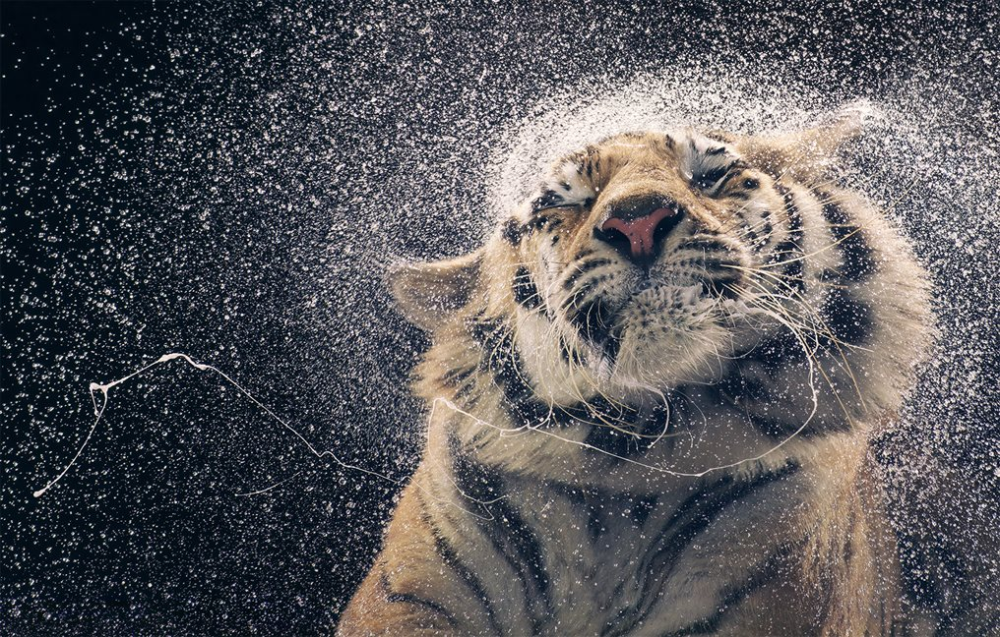

Lamentablemente en el planeta existen más de 7,7 millones de especies de animales y más del 20% está en peligro de extinción. Algunos de los animales más extraños de nuestro planeta caminan en la cuerda floja de la extinción.
Desde que la vida surgió en la Tierra se ha producido cinco grandes extinciones de las especies que han poblado la Tierra: son las conocidas como las cinco extinciones masivas. En la actualidad, y debido a la acción de los seres humanos, el planeta está al borde de los que los científicos denominan la Sexta Gran Extinción.
¿Cuándo se considera una especie en peligro de extinción?
Se considera que una especie está en peligro de extinción cuando todos los representantes de la misma corren el riesgo de desaparecer de la faz de la Tierra.
¿Cuántos animales están en peligro de extinción?
Según datos de la Unión Internacional para la Conservación de la Naturaleza (UICN), el organismo internacional con mayor potestad sobre el problema, aproximadamente 5.200 especies de animales se encuentran en peligro de extinción en la actualidad.Se encuentran en peligro de extinción el 11% de las aves, el 20% de los reptiles, el 34% de los peces y 25% de los anfibios y mamíferos.
Causas de que los animales estén en peligro de extinción
Existen múltiples causas por las que una especie puede llegar a encontrarse al borde de la extinción.Entre las mayores amenazas se encuentra la destrucción y fragmentación de sus hábitats; el cambio climático; la caza y tráfico ilegal; y la introducción de especies exóticas.
¿Cómo evitar la extinción de especies?
Conseguir que una especie deje de estar en peligro de extinción no es una tarea fácil. Evitar que una especie desaparezca implica la puesta en marcha de una gran cantidad de recursos y acciones concretas. Algunas de ellas serían evitar la fragmentación de sus hábitats, por ejemplo la deforestación; perseguir y castigar con dureza la caza ilegal y el tráfico de especies; la creación de reservas naturales; o el fomento de programas de reproducción, reintroducción y de mejora genética. La lucha contra la contaminación y el cambio climático también es la lucha por la conservación de muchos animales. Cada decisión personal tiene una consecuencia a nivel global en múltiples aspectos, de ahí la importancia de la concienciación social de la población para luchar contra la pérdida de biodiversidad.
- Oso panda
- Ajolote
- Rinoceronte blanco
- Tigre de sumatra
- Jaguar
- Ocelote
- Manatí
- Tapir
A continuacion veras algunas de las especies en peligro de extinción más llamativas y emblemáticas del planeta fotografiadas durante más de dos años por el fotógrafo de naturaleza Tim Flach. Como explica el propio autor, "quería crear imágenes que nos conmoviesen emocionalmente, de modo que nos sintamos obligados a cambiar nuestra relación con la naturaleza".
Oso panda

En la década de 1980, el gobierno chino lanzó una de las campañas de conservación más grandes y caras de la historia para salvar al panda gigante. Se prohibió la caza furtiva, se protegieron los bosques y se logró el reconocimiento internacional de la difícil situación del panda. El esfuerzo eventualmente llevó a un aumento en la población silvestre del panda gigante, y en 2016, la especie fue finalmente clasificada como vulnerable. Muchos grupos se mostraron jubilosos y vieron la reclasificación como un triunfo del trabajo duro y la acción del gobierno; sin embargo a otros les preocupaba que esta nueva clasificación resultara engañosa, y pudiera disminuir la financiación e investigación.
A día de hoy solo hay dos mil individuos viviendo en la naturaleza, dispersos en varias poblaciones aisladas. Además, su fuente de alimento, el bambú, es muy sensible a la temperatura, y los bosques de bambú de China pronto serán extensamente dañados por el cambio climático.
Tigres
En los últimos 100 años, la población mundial de tigres se ha reducido en un 97%, y tres de sus nueve subespecies se han extinguido. En 2010, las naciones en la que aun habitan los tigres hicieron un pacto innovador para duplicar la población mundial de tigres para el año 2022. Se comprometieron a proteger el hábitat natural y combatir el comercio internacional ilegal en torno a esta especie, centrándose en la demanda de vino tigre y varias medicinas tradicionales. A principios de abril de 2016, se anunció un aumento mundial de tigres por primera vez en la historia: India, Rusia, Nepal y Bhután informaron sobre mejoras significativas pero esto no duro mucho ya que las cifras siguen disminuyendo en todo el sudeste asiático, salvando el caso de un santuario en el oeste de Tailandia. Por otro lado Camboya ha declarado extintos a los tigres a nivel nacional, el tigre del sur de China casi ha desaparecido y el tigre de Sumatra -el último de Indonesia- también está en peligro crítico. Su futuro sigue siendo incierto, pero el deseo de proteger a nuestra megafauna más carismática claramente sigue vivo.
Mas informacion